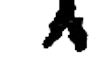
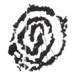

Na capa, acima do título do livro, flutua a imagem da obra Carrossel de Bispo do Rosário, uma espécie de brinquedo arcaico, lembrança dos primeiros anos, que parece nos lançar entre dois lugares temporalmente distantes: o abrigo daqueles dias e a memória já esgarçada pelo Tempo. A princípio, é essa distância que se apresenta. A fundo, porém, estão muito próximos aquilo que foi vivido e aquilo que a memória fez permanecer. Talvez seja justamente nesse vinco entre experiência e lembrança que a imagem nos peça uma entrada no livro. Esta leitura surge a partir de uma senda incompatível pela imagem produzida ainda no título. Retornaremos a isso.
A cidadania das bonecas de pano, de Ricardo Domeneck, publicado pela editora Ars et Vita, abre com duas epígrafes que reverenciam aquilo que escapa ao comum, mas também interrogam a possibilidade de escapar da norma. De um lado, a escolha fora do movimento comum; de outro, uma questão que coloca tudo em jogo. O desejo da norma sussurra ao ouvido: artificial, sedutor. A contradição entre o desejo de escapar e aquilo que, de dentro, continua nos constituindo.
Ao longo do livro há um movimento entre os jogos do passado, das escolhas, não tomadas mas arrancadas, em direção a quê?, talvez esse coito obscuro com o que nos atormenta, marcado nos rastros que deixamos, nos que deixam em nós, talvez nos objetos que tivemos, nos outros que nos tiveram. O corpus familiar encontra o corpus masculino. Como um metrônomo da palavra os versos alternam lá-e-cá numa falta que se foi, noutra que ainda se vai. Do Currículo da mãe à Figura de um homem, seus pés fazem coro num fluxo natura-humano-animal, divino-carnal, que, se parecem apartados,
distantes em tempo e espaço,
nalgum lugar se encontram,
talvez no coração do poeta:
O próprio título arma uma contradição semelhante. Cidadania remete ao reconhecimento de um sujeito, à inscrição de um corpo na comunidade e na ordem dos direitos, e bonecas de pano, ao contrário, nomeia objetos feitos de retalhos, costuras e sobras. A cidadania é atribuída a algo que, pela própria imagem, parece não possuir voz. O livro parece habitar esse intervalo: entre sujeito e objeto, corpo e coisa, pessoa e aquilo que pode ser manipulado, desejado, descartado. Não por acaso, a linguagem de Domeneck faz com que as coisas falem, enquanto os corpos são constantemente transformados em coisas, bichos, plantas, deuses. A fronteira entre eles nunca permanece intacta.
Há dedicatórias espalhadas por todo o livro. Lembremos da máxima que diz que quando publicado, o poema já não pertence mais ao poeta. Isto é claro. A questão é que aqui, essa separação, esse parto, esse filho que cria asas e se vai, é direcionado por Domeneck de maneira que para além da homenagem ou lembrança os poemas existam povoados por aqueles outros nomes. Mais que os ditos há os não nomeados que parecem morrer na ponta da língua e lotam a sala de espera. O corpo do outro faz falta, faz falta essa presença próxima. Na terceira parte do poema Seis canções para a concha surge esse lamento de corpo que sente falta doutro corpo, falta da construção que sobreponha a memória passada, confusa.
Os deuses desta cosmogonia domeneckiana são de carne. Mais que a evidente ode ao corpo masculino, como no seu também recente Memorando: Maximin, certo atributo uterino dos corpos e a santidade animal pairam e transfiguram-se diversas. Do lado animal, da onça fantásmica à mula incriada, do bicho com reinado anunciado ao que participa da ordem oculta do menor. Cada qual tem seu grupo de iniciados, seus orfistas.
A figura da mula é consagrada pela palavra. Surge primeiro no poema A mula dos músculos, com a aura mística do erótico, a Hilda Hilst in memoriam, e retorna em Outra mula mas sem Deus, onde a libertação pelo sagrado se torna quase erótica: a mula / incriada por deus nenhum. A figura cambiante, transmutável, passa a representar os dois lados deste Jano particular: o corpo humano, masculino, carregado e carregador; o animal, simultaneamente sagrado e pagão.
O poema A mula dos músculos inicia a partir de um mandamento, Não cobiçarás a mulher do próximo, e segue a partir da profanação, com maiúsculas que quebram o ritmo sacramental e erudito a cada estrofe, Decretou O MAIS FORMOSO, Domeneck jocosamente joga com o que seriamente trata, Senhor e senhora Ó SUJEITOSO / Não tratarás os corpos dos outros / Como quem trata a roupas / Nas vitrines Ó DESCONTOSO. E cambiante encerra a brincadeira como quem recorda que a infância passou e levou o brincar e quem sabe que o entrelace e desenlace dos corpos é jogo também, Das praias as pernas as batatas / As berinjelas Ó MAIS SEMEOSO, é brincadeira perversa, Como porcos Nós os porcos saudáveis / No lamaçal dos nossos quereres / Chafurdar é o que é bom / E comer comer quando comer era foder.
O poema Outra mula…, revela a mula quase hierática, mais-que-divina pois aqui está ela. O animal que mais que nas religiões, na arte, foi tornado santo desde o trabalho realizado por Robert Bresson em Au hasard Balthazar (1966). No Brasil, A Grande Testemunha. A mula domeneckiana passa a figurar nas grandes representações do bicho. ah! a / mula-Buda / oh! a / mula-Cristo que percorre a cultura brasileira atravessando Brás Cubas, tão repleta do outro quanto absoluta em si mesma, tão fértil quanto o androide / a indivisível e una / como o peixe-boi / a mula só outra raça-de-cão.
Só outra parte do mundo recebe tamanha atenção dignificante, outra-outra. Certa coisa maternal da proteção e de primeiro senso de violência injustiçada no mundo, de dor sentida a partir da dor do outro, é revelada. O mesmo corpo masculino desejado pelo eu-alterado do livro é o impulso vetorial da violência vivida por este eu-outro. Em Histórias verídicas é o pai ditador que assombra, que violenta e toma conta. Havia coisas / que a família / não contava ao pai. A cidadania parece este lugar em que pode-se contar tudo. Este lugar da vingança desvairada, perversamente tratada através do trabalho poético, estético, ritmado. Tudo é possível no campo da palavra.
A santidade maternal é que carrega as dores do mundo, à matriarca, / o gerenciamento / das dividas com Deus. É ela também Mnémosine corredora de mundos, im-possíveis pelo poema, detentora do que seremos ou não
Para além de tudo isto, a própria insistência nos memoriais levanta questão: o que há aqui além da memória? O que existe para ser lido além do que se guardou do passado? Pensamos nós arqueólogos de mensagens em garrafas no mar. Em Elegia quase uma ode para Friederike Mayröcker, um vislumbre de resposta: os fenômenos da natureza e a natureza dos fenômenos.
(Primeiro pensemos como é necessária certa serenidade presente do eu-outro que acompanhamos que só parece possível ao ter-se coragem na busca, no enfrentamento do passado. Cidadania, sem dúvidas, é tomado por tal serenidade violenta.)
O poema inicia ainda preso à memória dolorosa. A notícia da morte da poeta austríaca. O fluxo-floema irrompe pela língua: Hilda Hilst, matriarcas, o beabá, os jogos da austríaca com a linguagem-língua, poemas faunoflorais, guindastes amarelos. Tudo passa a pertencer a um mesmo mundo. Tudo são fenômenos da natureza, sejam coisas antes vivas ou não, agora avivadas por nós, pela palavra. A Mãe é onisciente: materna e madrasta é toda língua.
E o trajeto da língua não se limita às imagens: atravessa também a letragem, a materialidade da página. Em Ora, batemos palmas com a língua-nossa, a língua carnal da boca falante e espiritual da leitura silenciosa.
Ora, esses rumos tomados, essas transposições propostas por Ricardo Domeneck, não são poemas também propostas? convites a um além?, levam-nos do provinciano ao universal numa mesma figura, ainda que ela, teimosa, não pare de mudar. Há concordância na natureza das coisas. A onça come a capivara. O poeta, azedo e doce, escreve.
